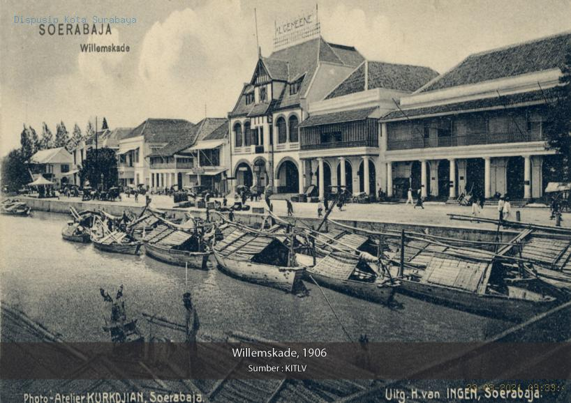
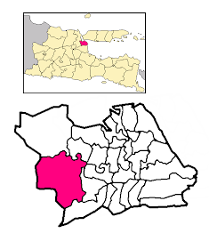
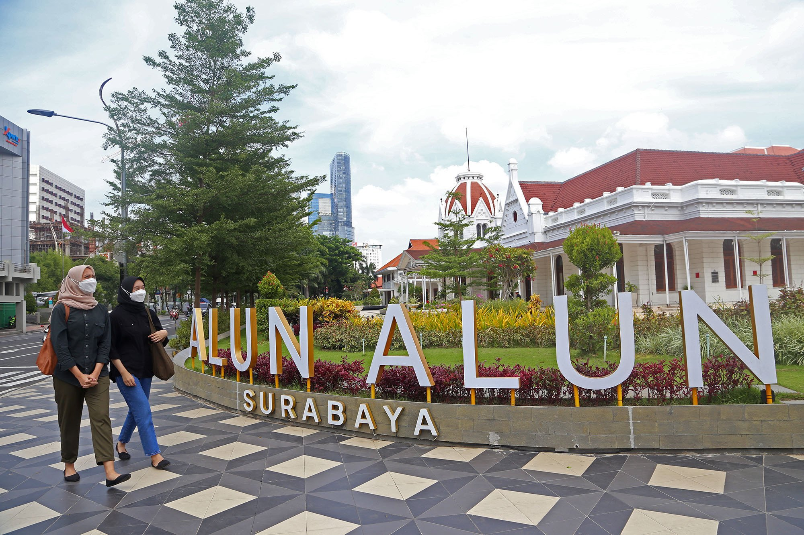
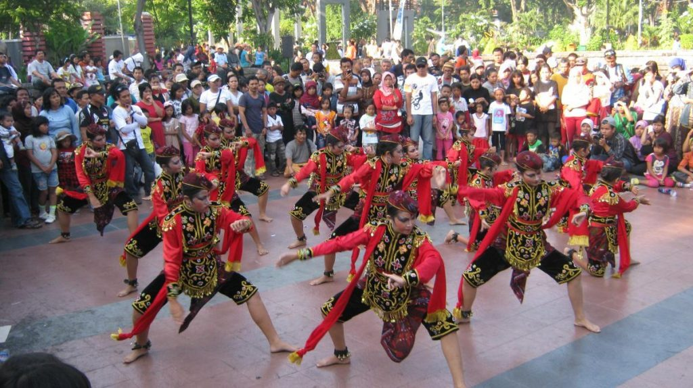

sejarah

surabaya kota lama Nilai kepahlawanan tersebut salah satunya mewujud dalam peristiwa pertempuran antara Raden Wijaya dan Pasukan Mongol pimpinan Kubilai Khan di tahun 1293.
Begitu bersejarahnya pertempuran tersebut hingga tanggalnya diabadikan menjadi tanggal berdirinya Kota Surabaya hingga saat ini, yaitu 31 Me
geografiS

Secara geografis, terletak di 7°9′- 7°21′ Lintang Selatan dan 112° 36′ – 112° 54′ Bujur Timur. Kota Surabaya berbatasan dengan Selat Madura di utara dan timur, Kabupaten Sidoarjo di selatan, dan Kabupaten Gresik di barat. Kota Surabaya memiliki luas 33.306,30 Ha.
wisata

surabaya kota lama Nilai kepahlawanan tersebut salah satunya mewujud dalam peristiwa pertempuran antara Raden Wijaya dan Pasukan Mongol pimpinan Kubilai Khan di tahun 1293.
Begitu bersejarahnya pertempuran tersebut hingga tanggalnya diabadikan menjadi tanggal berdirinya Kota Surabaya hingga saat ini, yaitu 31 Me
budaya

surabaya kota lama Nilai kepahlawanan tersebut salah satunya mewujud dalam peristiwa pertempuran antara Raden Wijaya dan Pasukan Mongol pimpinan Kubilai Khan di tahun 1293.
Begitu bersejarahnya pertempuran tersebut hingga tanggalnya diabadikan menjadi tanggal berdirinya Kota Surabaya hingga saat ini, yaitu 31 Me